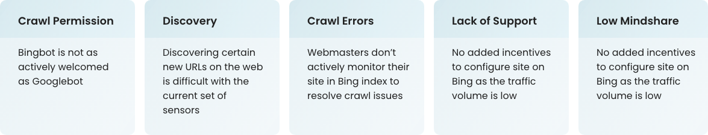
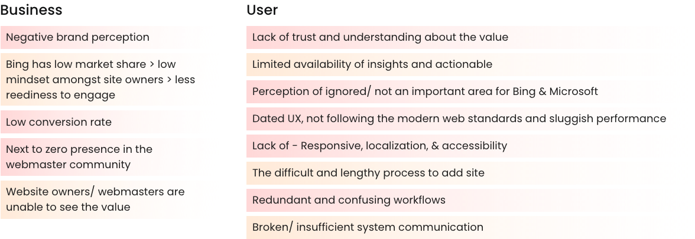
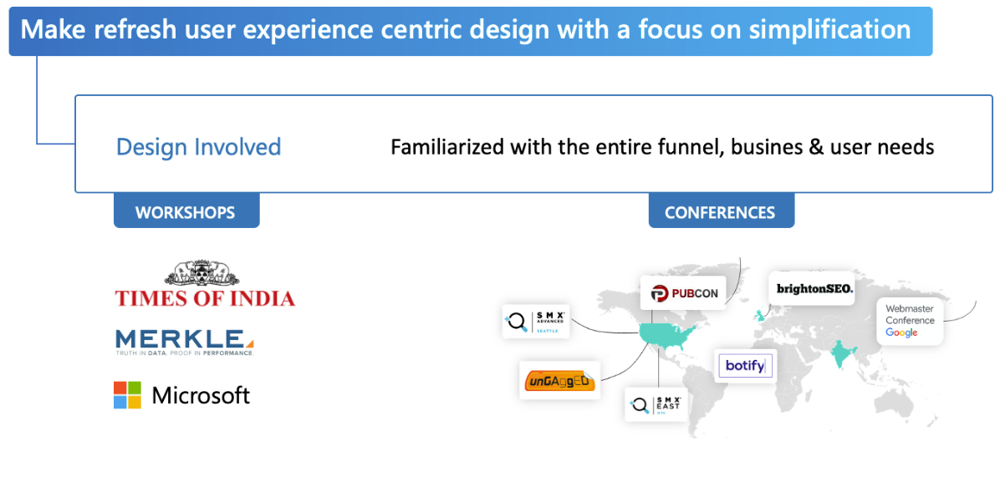
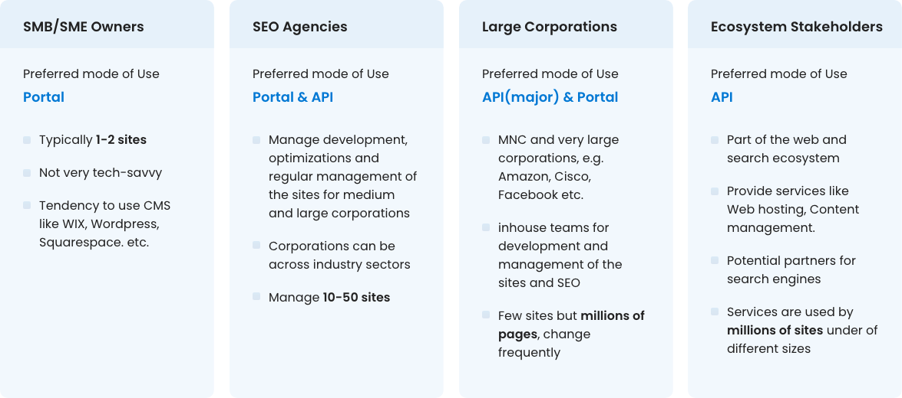
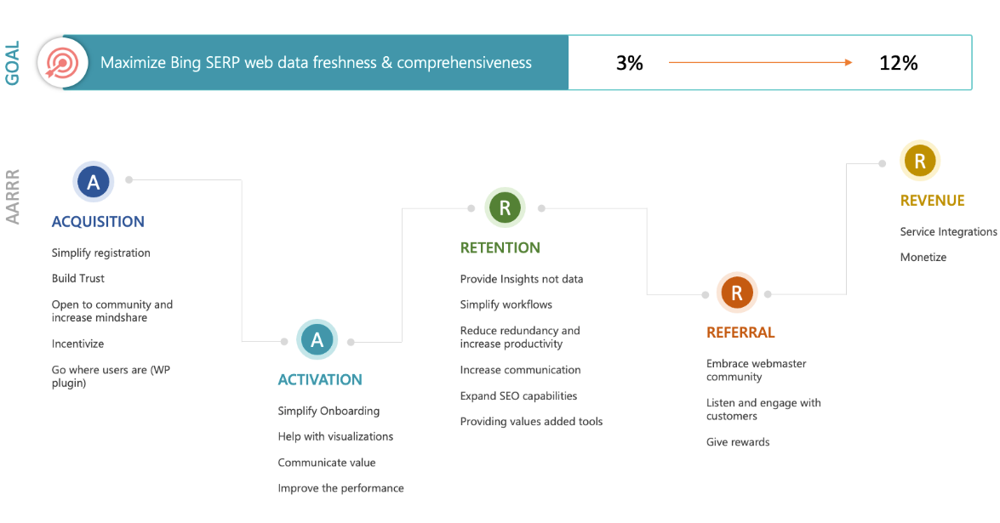
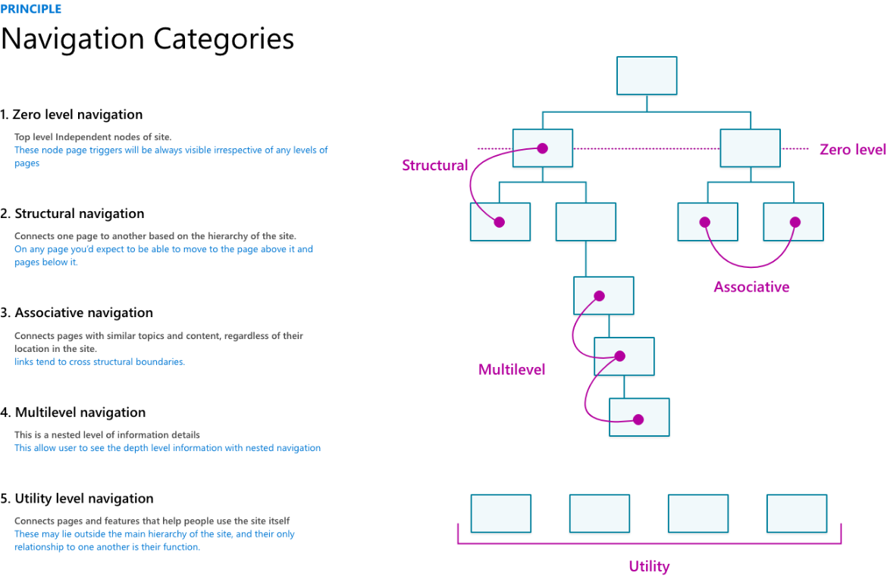
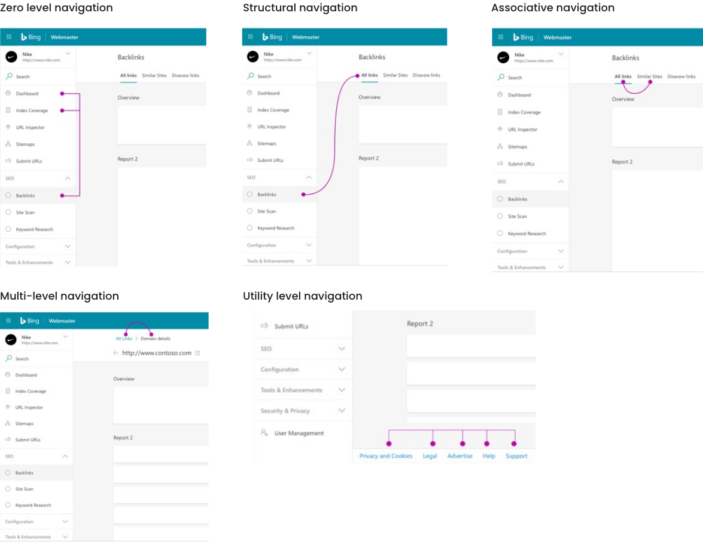

About
Microsoft Bing Webmaster Tools is a free service as part of Microsoft’s Bing search engine that allows Webmasters and Site owners to add their websites to the Bing index crawler, see their site’s performance in Bing (clicks, impressions), and a lot more. It also provides a suite of tools for analyzing your website, spotting SEO issues, and logging performance, which can be very useful for testing and influencing how your site appears in Bing SERP(Search Engine Results Page).
The Major Problem
The major problem for Microsoft Bing was getting fresh, comprehensive, and rich web data from the ecosystem. Some of the major challenges faced by Microsoft Bing in getting that data at scale:
Challenges
A quick flash of the old portal
A design driven process
We had decided to make a strong case for restructuring a powerful and widely. Used product, to make it more user friendly. With every design decision, we had to ensure that it really was going to be a valuable change for our existing users, with minimum learning effort and increased the ease of use. For this we stayed touch with product advisors and evangelists at each phase.
Our customers
We defined the our customers based on various metrics like mode of use, number of sites and no of pages, and industry types.
features thinking vs framework thinking
A goal has been set on the impact level and then we sort of adopted a systematic approach with establishing design principles and design language by breaking all the workflows and features into various phases of these product funnel of AARRR framework
Foundation
Before even we went down to this funnel we did some foundational work, eventually which is going to impact across the funnel. A design system had been created and setup to uplift the look and feel and have consistency across the tool.
Navigation system
“we wanted to keep the complexity to us, not transfer it to the user.
We defined the principle and guideline to simplify the complicated navigation structure with multiple categories to make it easy to use for the user
